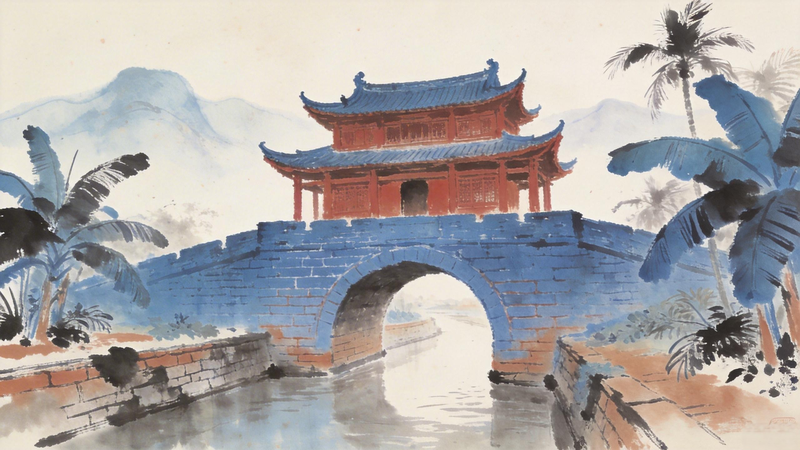

崖城智查
AI
崖城智查
AI
崖城智查
AI
崖城智查
AI

千年崖城风骨，永续文脉传承
崖州古城千年文脉，并非孤立沉淀，而是形为基底、技为筋骨、人为脉络、魂为内核的完整文化体系。前三维度层层递进、互为支撑，最终共同汇聚、升华出崖州古城独有的精神风骨。
城池形制 · 街巷肌理 · 空间布局
点击激活维度
榫卯工艺 · 雕刻技法 · 建筑智慧
点击激活维度
名臣谪贤 · 本土先民 · 商旅百姓
点击激活维度
✦ 点击轨道节点或左侧卡片，汇聚崖城之魂 ✦
探索形、技、人三个维度，见证它们如何汇聚升华，凝练成崖城独有的精神风骨。
古城独特的城池格局、街巷肌理、空间布局，是崖州文化最直观的物质载体。
"三通、四漏、七转、八角"的古城形制，依山傍海的选址智慧，构筑了崖州千年不变的城市骨架。
有形的城池格局，承载无形的山海气场，为文化精神的孕育奠定空间基础。
传统营造技艺、材料工艺、装饰美学，是古人因地制宜、顺势而为的建造智慧。
精雕细琢的工艺细节、适配南疆气候的建筑技法，体现了精益求精、务实创新的工匠精神。
建筑技艺让古城不止有皮囊，更拥有坚韧、细致、质朴的文化气质。
历代名臣谪贤、本土先民、商旅百姓在崖州生活耕耘、兴教兴城。
人物事迹、人文活动不断重塑建筑功能、丰富城市故事、积累地域底蕴。
因人而有故事，因故事而有温度，让静态古建筑成为流动的文化载体。
正是空间形制、营造技艺、人文积淀三者层层叠加、深度交融，最终淬炼出崖州古城开放包容、崇文刚毅、生生不息的千年精神内核。
一城形制，见山海格局；
一匠精工，见古人智慧；
一世人文，见千年风骨。
从物质到技艺，从人事到精神，崖州古城在形、技、人的层层积淀中，最终凝成独属于海南南端的崖城风骨，实现千年文脉的永续传承。
中华建筑文明的精神内核
坚守中华传统营城理念、营造技艺、礼制文化的核心内核
适配南疆地域环境、融合海洋文化、吸纳多元人群的创新精神
千年文脉不绝，中华建筑文化与文明精神的持续传承